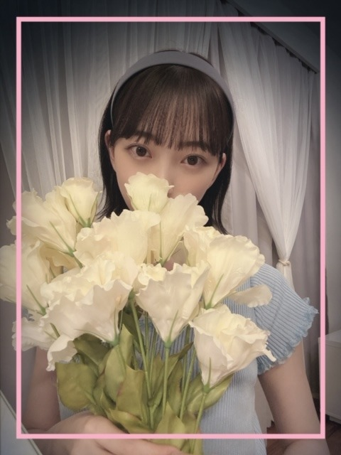
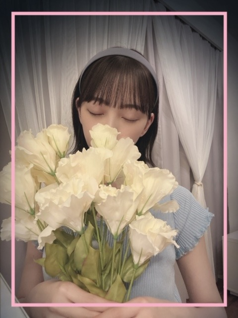

2020/0728Tue不器用ながらに
こんにちは！
最近は日本沈没2020というアニメを観てます
もうすぐ観終わる〜
色々と考えさせられます
おじいちゃんのシーン1つかっこいいところあって
そこのファンです。笑
あとラップも衝撃だったな
あとはジブリ作品・新海誠さん作品ヲタクなので
なにかしらは毎日観ていますね
みなさんは最近ハマっていることはありますか？
MV撮影のとき、
カチューシャと悩んだあげく
結局おんぷちゃんヘアにヘアピンに
した裏話があります。笑
いつかカチューシャもつけれたらいいな〜


夏の屋台といえばなにかなー？
お家で屋台飯を再現して家族でおうち夏祭りを
しようと思っていて！教えてください！
^ - ^
では
2020/07/28 16:00
コメント(309)
未央奈お疲れ様です！
ブログ更新ありがとう！
最近は全然映画見てない笑
ちなみに昨日おれ誕生日でした笑
カチューシャも似合ってかわいい！
白花似合うのめっちゃ羨ま笑
これからもずっと応援してる！
がんばれー！
ブログ更新ありがとう！
最近は全然映画見てない笑
ちなみに昨日おれ誕生日でした笑
カチューシャも似合ってかわいい！
白花似合うのめっちゃ羨ま笑
これからもずっと応援してる！
がんばれー！
こんばんは。ブログ更新ありがとうございます。
私の趣味は音楽と機械いじりです。ブライアン・セッツァーというギタリストが言うには、「16歳の時好きだったものが、その後もずーっと好きなんだよね。」だそうです。私が音楽にはまったのが13歳の時、機械いじりにはまったのは16歳の時です。現在56歳ですから、40年続いています。
お祭りの屋台か～。お好み焼き、たこ焼き、焼きそば、たい焼き、今川焼（回転焼き）、わたあめ、りんご飴、チョコバナナ、あと夏限定でかき氷とラムネですかね。どれも自分で出来そうな気がしますが、実際には職人さんにはかなわないんだろうなー。
ではまた。
私の趣味は音楽と機械いじりです。ブライアン・セッツァーというギタリストが言うには、「16歳の時好きだったものが、その後もずーっと好きなんだよね。」だそうです。私が音楽にはまったのが13歳の時、機械いじりにはまったのは16歳の時です。現在56歳ですから、40年続いています。
お祭りの屋台か～。お好み焼き、たこ焼き、焼きそば、たい焼き、今川焼（回転焼き）、わたあめ、りんご飴、チョコバナナ、あと夏限定でかき氷とラムネですかね。どれも自分で出来そうな気がしますが、実際には職人さんにはかなわないんだろうなー。
ではまた。
未央奈～ こんにちは
ブログ更新ありがとうございます。
７５５も含めて、たくさんの更新ありがとうございます。
筆まめな未央奈にいつも頭が下がります。
「日本沈没」なんて、わたしのようなおじさんにとっては、ずいぶんなつかしい映画です。もう４５年くらい前じゃないかな？
映画好きの未央奈にとって、やはり大切なのは「ホットギミック」、Blu-ray＆ＤＶＤ化おめでとうございます。舞台挨拶付きということで、思い出しそうです。
「ザ・ドリームバイト」ももちろん見ましたよ。「織部金次郎」が好きだったとは、映画好きの未央奈はそこまでも？
そして愛犬も良かったですね。番組中、動物見ながら「かわいい」という未央奈の声が「かわいかった」です。
歌番組、CD-TVのLIVEも楽しみにしていますよ。
ブログ更新ありがとうございます。
７５５も含めて、たくさんの更新ありがとうございます。
筆まめな未央奈にいつも頭が下がります。
「日本沈没」なんて、わたしのようなおじさんにとっては、ずいぶんなつかしい映画です。もう４５年くらい前じゃないかな？
映画好きの未央奈にとって、やはり大切なのは「ホットギミック」、Blu-ray＆ＤＶＤ化おめでとうございます。舞台挨拶付きということで、思い出しそうです。
「ザ・ドリームバイト」ももちろん見ましたよ。「織部金次郎」が好きだったとは、映画好きの未央奈はそこまでも？
そして愛犬も良かったですね。番組中、動物見ながら「かわいい」という未央奈の声が「かわいかった」です。
歌番組、CD-TVのLIVEも楽しみにしていますよ。
みおな
こんばんは
最近は、あつ森にハマっていて、島の開拓を進めてます
さそりが捕まえられなくて困ってます笑
みおなは、もうあつ森ブームは終わっちゃったのかな？
夏の屋台といえば、かき氷とか焼きそば、フランクフルトかな？
割高だけど、屋台の焼きそばは何であんなに上手いのか不思議です笑
チョコバナナとクレープって生まれてから一度も食べた事ないけど美味しいのかな？
みおなと夏祭りとか、めっちゃ楽しそうです
Route246がカッコよくて、通勤の車でも流してるし仕事してる時も頭の中でリピート再生されてます笑
やる気が上がる気がします
またコメントします
ありがとうございました
こんばんは
最近は、あつ森にハマっていて、島の開拓を進めてます
さそりが捕まえられなくて困ってます笑
みおなは、もうあつ森ブームは終わっちゃったのかな？
夏の屋台といえば、かき氷とか焼きそば、フランクフルトかな？
割高だけど、屋台の焼きそばは何であんなに上手いのか不思議です笑
チョコバナナとクレープって生まれてから一度も食べた事ないけど美味しいのかな？
みおなと夏祭りとか、めっちゃ楽しそうです
Route246がカッコよくて、通勤の車でも流してるし仕事してる時も頭の中でリピート再生されてます笑
やる気が上がる気がします
またコメントします
ありがとうございました
ブログの更新ありがとう☺︎
録画した映画とか何回でも観れちゃう〜
ジブリ等もいい作品ばかりですよね！
今後のブログも楽しみに待ってます！
体調には気をつけてね！
応援してます！
大好きです♡
夏の屋台といえばやっぱり！
………(；－ω－)ｳｰﾝ
なんだろう〜〜？？
かき氷とか？
簡単に作れるものがいいよね！
録画した映画とか何回でも観れちゃう〜
ジブリ等もいい作品ばかりですよね！
今後のブログも楽しみに待ってます！
体調には気をつけてね！
応援してます！
大好きです♡
夏の屋台といえばやっぱり！
………(；－ω－)ｳｰﾝ
なんだろう〜〜？？
かき氷とか？
簡単に作れるものがいいよね！
堀ちゃんこんばんは！
最近のマイブームはヘアケアです、男ですが笑
色んなシーンでブラシをするのが実は髪に1番いいって聞いて、ちょっと良さめの木製ヘアブラシを買ってみて梳かしてみてます(^^)
今まで全くやったことなかったですが、なんだか楽しいです( ´ ▽ ` )♩
やっぱり身嗜みには気遣っていたいので、髪とか肌とかは大切にしていきたいなと年々思います(^^)
顔は変わりませんが、髪とかちゃんとすると印象ってだいぶ変わりますよね(o^^o)
堀ちゃんはいつも髪も綺麗ですがブラシとかしてますかー？( ´ ▽ ` )
夏の屋台は色々好きですが、1番食べたくなるのはフランクフルトです〜( ´ ▽ ` )
ケチャップを多めにかけて食べるのが好きです！ちょっとしょっぱいのがお祭りで食べるのはいいです(o^^o)♩
あとは定番かもですが焼きそばです、細麺の水っ気は少なめのソースが好きです、紅ショウガはありで、かつお節はなし派です(^^)笑
あと、甘い系でいくと東京ケーキですね、前を通るといい香りがするんです( ´ ▽ ` )♩
夏祭りとかも今年は行けなさそうですね、少し寂しい( ´ ー ` )
おうち夏祭り開催したら教えてください！もしかして浴衣とかも…！？と密かに期待しています(o^^o)笑
余談ですが、いま手元には浴衣姿の堀ちゃん、が映ったうちわがあります、ライブグッズも日常生活で使うタイプなので毎日涼しいです、お風呂上がりにいつもありがとう〜( ´ ▽ ` )笑
そしてそして、今回載せてくれてる写真も格別に可愛いですね(o^^o)
カチューシャ姿めっちゃ好きです！個人的にはこういう太めのカチューシャをした堀ちゃんがまた特別に好きです！
ロングも好きですが、カチューシャのときはショートのときがより可愛いなぁと( ´ ▽ ` )
淡いブルーもお似合いで可愛いです、堀ちゃんの定番って感じになってきましたね(o^^o)♩
いつも写真載せてくれてありがとうございます、好きな人の可愛いお顔を見られるのって、たぶん堀ちゃんが思ってる以上にめちゃくちゃ嬉しいんですよ(o^^o)
今後ともよろしくお願いします！笑
では！そろそろ夏も近いですかね、こんな状況ですが細々と盛り上がっていきましょー( ´ ▽ ` )笑
またコメントさせてくださいー！
最近のマイブームはヘアケアです、男ですが笑
色んなシーンでブラシをするのが実は髪に1番いいって聞いて、ちょっと良さめの木製ヘアブラシを買ってみて梳かしてみてます(^^)
今まで全くやったことなかったですが、なんだか楽しいです( ´ ▽ ` )♩
やっぱり身嗜みには気遣っていたいので、髪とか肌とかは大切にしていきたいなと年々思います(^^)
顔は変わりませんが、髪とかちゃんとすると印象ってだいぶ変わりますよね(o^^o)
堀ちゃんはいつも髪も綺麗ですがブラシとかしてますかー？( ´ ▽ ` )
夏の屋台は色々好きですが、1番食べたくなるのはフランクフルトです〜( ´ ▽ ` )
ケチャップを多めにかけて食べるのが好きです！ちょっとしょっぱいのがお祭りで食べるのはいいです(o^^o)♩
あとは定番かもですが焼きそばです、細麺の水っ気は少なめのソースが好きです、紅ショウガはありで、かつお節はなし派です(^^)笑
あと、甘い系でいくと東京ケーキですね、前を通るといい香りがするんです( ´ ▽ ` )♩
夏祭りとかも今年は行けなさそうですね、少し寂しい( ´ ー ` )
おうち夏祭り開催したら教えてください！もしかして浴衣とかも…！？と密かに期待しています(o^^o)笑
余談ですが、いま手元には浴衣姿の堀ちゃん、が映ったうちわがあります、ライブグッズも日常生活で使うタイプなので毎日涼しいです、お風呂上がりにいつもありがとう〜( ´ ▽ ` )笑
そしてそして、今回載せてくれてる写真も格別に可愛いですね(o^^o)
カチューシャ姿めっちゃ好きです！個人的にはこういう太めのカチューシャをした堀ちゃんがまた特別に好きです！
ロングも好きですが、カチューシャのときはショートのときがより可愛いなぁと( ´ ▽ ` )
淡いブルーもお似合いで可愛いです、堀ちゃんの定番って感じになってきましたね(o^^o)♩
いつも写真載せてくれてありがとうございます、好きな人の可愛いお顔を見られるのって、たぶん堀ちゃんが思ってる以上にめちゃくちゃ嬉しいんですよ(o^^o)
今後ともよろしくお願いします！笑
では！そろそろ夏も近いですかね、こんな状況ですが細々と盛り上がっていきましょー( ´ ▽ ` )笑
またコメントさせてくださいー！
いろいろとバランス良く人並み以上なのと、
なにかで優れた才能を持ってるんだけど他はダメダメなのと、
未央奈はどっちがタイプ？
なにかで優れた才能を持ってるんだけど他はダメダメなのと、
未央奈はどっちがタイプ？
未央奈ちゃん、こんばんは(^o^)/
腕の湿布が痛々しい(´・ω・`)
屋台料理といえば焼きそばでしょ
あとはたこ焼きとかイカ焼きかな？
腕の湿布が痛々しい(´・ω・`)
屋台料理といえば焼きそばでしょ
あとはたこ焼きとかイカ焼きかな？
ブログ更新ありがとうございます！
屋台といえば僕は焼きとうもろこしが好きですね〜
焼きそばもいい感じです！
去年花火見に行ったりしていたのがとても懐かしいです笑
いつかまた花火とか見に行けるようになりたいですね〜
屋台といえば僕は焼きとうもろこしが好きですね〜
焼きそばもいい感じです！
去年花火見に行ったりしていたのがとても懐かしいです笑
いつかまた花火とか見に行けるようになりたいですね〜
屋台といえば、焼きそば、玉せん、フランクフルト、チョコバナナ、リンゴ飴、ベビーカステラなどは定番だよね。
あと、名古屋コーチンの唐揚げあったから食べたことあるけど、めっちゃ美味しかったよ。
最近はタピオカとか、ハットグとか、きゅうりの一本漬けとかもあるよね。
屋台はその場の雰囲気も相まってなんでも美味しいよね！
屋台じゃないけど、お千代保稲荷の串かつが好きだったな～、もうずっと行ってないけど、今はどうなってるのかな。
大須観音は元々あの辺りの羽島にあったんだよね。
美味しい食べ物は元気が出るね～。笑
お祭り楽しんでねっ！
堀ちゃんはいろんな作品観てるんだね。
僕は最近だと剣術やってるよ。
剣道とはまた違った身体の使い方でおもしろいです。
日本刀ってパワーがあるし、美術品としても美しいよね。
あと資格の勉強もしてます。
自分自身の教養も広がるし、誰かの力になれればいいなって思います。
あと、名古屋コーチンの唐揚げあったから食べたことあるけど、めっちゃ美味しかったよ。
最近はタピオカとか、ハットグとか、きゅうりの一本漬けとかもあるよね。
屋台はその場の雰囲気も相まってなんでも美味しいよね！
屋台じゃないけど、お千代保稲荷の串かつが好きだったな～、もうずっと行ってないけど、今はどうなってるのかな。
大須観音は元々あの辺りの羽島にあったんだよね。
美味しい食べ物は元気が出るね～。笑
お祭り楽しんでねっ！
堀ちゃんはいろんな作品観てるんだね。
僕は最近だと剣術やってるよ。
剣道とはまた違った身体の使い方でおもしろいです。
日本刀ってパワーがあるし、美術品としても美しいよね。
あと資格の勉強もしてます。
自分自身の教養も広がるし、誰かの力になれればいいなって思います。
未央奈さん！ブログ更新ありがとうございます！
僕のマイブームは未央奈さんのブログを読むことです！笑笑
今年はコロナでお祭りも無くなってしまって夏だっ！って感じがあんまりしないですね、、
お祭りの屋台といえば、うーん、、チョコバナナですかね？笑笑
個人的に好きなんですよねチョコバナナ笑笑
屋台飯じゃなくてすみません笑笑
コロナの第二波が本格的に来そうですね、、
お仕事が元に戻りつつある今こそお体にお気をつけください！
僕のマイブームは未央奈さんのブログを読むことです！笑笑
今年はコロナでお祭りも無くなってしまって夏だっ！って感じがあんまりしないですね、、
お祭りの屋台といえば、うーん、、チョコバナナですかね？笑笑
個人的に好きなんですよねチョコバナナ笑笑
屋台飯じゃなくてすみません笑笑
コロナの第二波が本格的に来そうですね、、
お仕事が元に戻りつつある今こそお体にお気をつけください！
一番に頭に浮かんだのが
焼きそば
食いたくなってきた(笑)
焼きそば
食いたくなってきた(笑)
日本沈没2020、私も大好きな作品でした。
もし、それが見終わったら、東京マグニチュード8.0というアニメを見てみてください。日本沈没2020が好きなら多分好きになれると思います。
もし、それが見終わったら、東京マグニチュード8.0というアニメを見てみてください。日本沈没2020が好きなら多分好きになれると思います。
未央奈さん、ブログありがとう！
7月の頭に早めの夏休みとったときに、君の名は、を2回見ました。実は君の名はをみるのは初めてでしたが、良かった。天気の子は封切られた時にみました。これも印象に残ってます。
屋台と言えば、焼きそばとお好み焼きではないかと。最近夏祭りとか行ってないので、懐かしい。
今ハマっていることですか？もちろん、未央奈さんです。未央奈のブログと写真、出演しているテレビ、雑誌、どハマりだよ。握手会とライブがない分、見逃しません。楽しいです！
今日の写真も可愛い！花と未央奈、よく似合ってるよ！
7月の頭に早めの夏休みとったときに、君の名は、を2回見ました。実は君の名はをみるのは初めてでしたが、良かった。天気の子は封切られた時にみました。これも印象に残ってます。
屋台と言えば、焼きそばとお好み焼きではないかと。最近夏祭りとか行ってないので、懐かしい。
今ハマっていることですか？もちろん、未央奈さんです。未央奈のブログと写真、出演しているテレビ、雑誌、どハマりだよ。握手会とライブがない分、見逃しません。楽しいです！
今日の写真も可愛い！花と未央奈、よく似合ってるよ！
お疲れ様!
未央奈ちゃんは相変わらず可愛過ぎる♪
最近はアニメ映画全然観てないな〜
2月にデジモン観に行ったぐらいかな？
屋台飯は焼きそばとかお好み焼きとかかな？
あとは飯ではないけど唐揚げとかクレープとかは祭りに
行ったときよく買うよ
未央奈ちゃんは相変わらず可愛過ぎる♪
最近はアニメ映画全然観てないな〜
2月にデジモン観に行ったぐらいかな？
屋台飯は焼きそばとかお好み焼きとかかな？
あとは飯ではないけど唐揚げとかクレープとかは祭りに
行ったときよく買うよ
backnumberがハッピーエンドまでのMVをフル解禁してますよ。
それはそうと、流行る理屈があるから、一概に、
流行りに乗ってる作品も面白いです・・・。
ネトフリのアニメ・・・！？
今はＭＣＵのマーベル作品で映画２３作品と
ドラマ１１作品の合計３４本を時系列で見直して
たり・・・海ドラの伝説作品ブレイキング・バッド後半とザ・ボーイズとアンブレラ・アカデミーを観てる・・・衝撃的傑作！
今週後半も体調に気をつけて行きましょう・・・
流行りに乗ってる作品も面白いです・・・。
ネトフリのアニメ・・・！？
今はＭＣＵのマーベル作品で映画２３作品と
ドラマ１１作品の合計３４本を時系列で見直して
たり・・・海ドラの伝説作品ブレイキング・バッド後半とザ・ボーイズとアンブレラ・アカデミーを観てる・・・衝撃的傑作！
今週後半も体調に気をつけて行きましょう・・・
更新ありがとう！！
未央奈の更新頻度高いの本当に嬉しいありがとう！
夏の屋台といえば射的かな、、理由は個人的に目当ての狙ってるところと景品を当てて喜ぶ未央奈を見たいからだよ絶対可愛い。。
外してしまって当てて？って頼んでくる未央奈も可愛いなあ全部妄想だけど、、笑 私は女だけど未央奈のことまじで彼女にしたい、、
あと未央奈はどんな髪型もかわいいけど短い髪の毛で三つ編みとかしてほしいなあ、カチューシャ組み合わせても絶対可愛い！
次の更新も楽しみにしてます！！
未央奈の更新頻度高いの本当に嬉しいありがとう！
夏の屋台といえば射的かな、、理由は個人的に目当ての狙ってるところと景品を当てて喜ぶ未央奈を見たいからだよ絶対可愛い。。
外してしまって当てて？って頼んでくる未央奈も可愛いなあ全部妄想だけど、、笑 私は女だけど未央奈のことまじで彼女にしたい、、
あと未央奈はどんな髪型もかわいいけど短い髪の毛で三つ編みとかしてほしいなあ、カチューシャ組み合わせても絶対可愛い！
次の更新も楽しみにしてます！！
こんばんは。セブンだよ(ฅ'ω'ฅ)♪
今日も1日お疲れ様でした
最近はBaby Stepという漫画にハマっていました
もう全巻読んじゃった
テニス漫画なんだけど、恋愛もあって
主人公が純粋でキュンキュンするのよ
なんか恋愛したくなった
未央奈はハマった漫画ありますか？
では、明日も1日楽しんで生きましょうd(@^∇ﾟ)/ﾌｧｲﾄｯ♪
おやすみおな☪️
今日も1日お疲れ様でした
最近はBaby Stepという漫画にハマっていました
もう全巻読んじゃった
テニス漫画なんだけど、恋愛もあって
主人公が純粋でキュンキュンするのよ
なんか恋愛したくなった
未央奈はハマった漫画ありますか？
では、明日も1日楽しんで生きましょうd(@^∇ﾟ)/ﾌｧｲﾄｯ♪
おやすみおな☪️
初めまして！
ゆいちです。
モバメありがとうございます！
飽きない気持ちわかります。
僕の地元がしんちゃんと一緒なので誇りに思います。
しんちゃんの幼稚園は今でもあります！
今度行ってみてください。
日本沈没2020は気になってました。
友達がNetflixに入ってるので観に行きます！
観たら感想を言いますね！
「君に届け」はどうでしょうか？
様々な恋愛が観れるのでいいと思います。
是非ご覧になってください！
後は「ラストゲーム」もオススメです。
これは漫画でしかないのですが、
幼少期から大人まで小学校時代、父親は大手リゾートの社長、顔も良く、勉強も運動もできる超完璧少年柳の前に、転校生九条が現れる。彼女に勉強も運動も惨敗し、その上家庭のことまでこなす彼女に人生で初めて負けを感じる。と共に雪辱を誓った。それから中学、高校、大学と追い続ける中で九条に対して恋心を自覚する。そしてついに柳は九条にプロポーズまがいのことをする。柳と九条の結婚をかけたラストゲーム。果たして勝敗は！？
予想できない展開ばかりなので面白かったです！
こちらも是非観てください！
体調には気をつけてください！
ゆいちです。
モバメありがとうございます！
飽きない気持ちわかります。
僕の地元がしんちゃんと一緒なので誇りに思います。
しんちゃんの幼稚園は今でもあります！
今度行ってみてください。
日本沈没2020は気になってました。
友達がNetflixに入ってるので観に行きます！
観たら感想を言いますね！
「君に届け」はどうでしょうか？
様々な恋愛が観れるのでいいと思います。
是非ご覧になってください！
後は「ラストゲーム」もオススメです。
これは漫画でしかないのですが、
幼少期から大人まで小学校時代、父親は大手リゾートの社長、顔も良く、勉強も運動もできる超完璧少年柳の前に、転校生九条が現れる。彼女に勉強も運動も惨敗し、その上家庭のことまでこなす彼女に人生で初めて負けを感じる。と共に雪辱を誓った。それから中学、高校、大学と追い続ける中で九条に対して恋心を自覚する。そしてついに柳は九条にプロポーズまがいのことをする。柳と九条の結婚をかけたラストゲーム。果たして勝敗は！？
予想できない展開ばかりなので面白かったです！
こちらも是非観てください！
体調には気をつけてください！
今バチェラーを見てる。Amazonプライムってお得だね！
未央奈ちゃんこんばんは☺️
俺も日本沈没観てみようかな♪
最近ハマってることはストレッチかな
硬すぎたので柔らかくしたい！
あと筋トレも頑張らねば！
屋台と言えば焼きそばかな(〃^ー^〃)
明日もHAPPYを
お休みなさい(^-^ゞ
可愛い写真たくさんありがとう♪
俺も日本沈没観てみようかな♪
最近ハマってることはストレッチかな
硬すぎたので柔らかくしたい！
あと筋トレも頑張らねば！
屋台と言えば焼きそばかな(〃^ー^〃)
明日もHAPPYを
お休みなさい(^-^ゞ
可愛い写真たくさんありがとう♪
みおなちゃん、大好きです
最近ハマってるもの？
う～ん、なんだろねぇ…
あ、"どつぼ"とか ←
←
といっても、"ツボ押し"の方のだけどね
他にも首や肩のコリをほぐして血流をよくするためだったり、一度痛めてから疲れが溜まりやすくなってしまった腰用にとか、何台かマッサージ器使ってるけど、個人的にはルルドシリーズが一番だと思う
まぁ、暑い季節になると億劫になってしまってあんまり使わなくなってしまうのだけどね。。
で、いつの間にか首・肩のコリが酷くなって頭痛の悪循環ループね。。
…やっぱりドツボやん。。 笑
笑
これで終わるのもなんなので、もう一つ。
目のリフレッシュには、アイピロー(アイマスク)かな。
めぐりズムとか使い捨てタイプもあるけど、やっぱり乾燥ラベンダーとか天然のものが中に入ってるものの方が効き目高い気がする
特にこれから暑い季節は冷蔵庫で冷やせるクールタイプがオススメ
スマホ・ゲーム・PCと何かと目を酷使しがちな現代人には、必須アイテムだと思う！(≧Д≦)力説
…あ、でも屋台の匂い(焼きもの)付きアイピローとかも、あったらなんか楽しそうだよね
空腹で寝れんくなるかもだけど…笑
…ん？ あれ？ 空腹でなくても……
あ、いや、何でもありません。。^－^；
う～ん、なんだろねぇ…
あ、"どつぼ"とか
といっても、"ツボ押し"の方のだけどね
他にも首や肩のコリをほぐして血流をよくするためだったり、一度痛めてから疲れが溜まりやすくなってしまった腰用にとか、何台かマッサージ器使ってるけど、個人的にはルルドシリーズが一番だと思う
まぁ、暑い季節になると億劫になってしまってあんまり使わなくなってしまうのだけどね。。
で、いつの間にか首・肩のコリが酷くなって頭痛の悪循環ループね。。
…やっぱりドツボやん。。
これで終わるのもなんなので、もう一つ。
目のリフレッシュには、アイピロー(アイマスク)かな。
めぐりズムとか使い捨てタイプもあるけど、やっぱり乾燥ラベンダーとか天然のものが中に入ってるものの方が効き目高い気がする
特にこれから暑い季節は冷蔵庫で冷やせるクールタイプがオススメ
スマホ・ゲーム・PCと何かと目を酷使しがちな現代人には、必須アイテムだと思う！(≧Д≦)力説
…あ、でも屋台の匂い(焼きもの)付きアイピローとかも、あったらなんか楽しそうだよね
空腹で寝れんくなるかもだけど…
…ん？ あれ？ 空腹でなくても……
あ、いや、何でもありません。。^－^；
おはよう、未央奈ちゃん
屋台といえば、イカ焼き。
丸焼きじゃなくて、粉ものの方。
大阪(関西？)でイカ焼きといえばこっち。
(間違いない笑)
岐阜ではどっちなのかなぁ。
屋台といえば、イカ焼き。
丸焼きじゃなくて、粉ものの方。
大阪(関西？)でイカ焼きといえばこっち。
(間違いない笑)
岐阜ではどっちなのかなぁ。
夏の屋台といえばやっぱ、「おでん」でしょ。そんで、家族でダチョウ倶楽部の上島竜兵遊びをする。楽しそう(笑)
じゃぁ、又
じゃぁ、又
かき氷！
おはよう、未央奈～！！
パネル展、大阪、名古屋、福岡まで行ってきたよぉ♪北海道は休みを取れなくて行けなくて、東京は今の状況的に行くのを断念して全国制覇が出来ないのがホンマに悔しいよぉ 収束して東京も行けると思ったのになぁ………
収束して東京も行けると思ったのになぁ………
でも、行く事の出来た三都市のパネル展は楽しんできたで！どれも可愛くて、当選したらどれかわからないけど貰えるっていうのが楽しみ過ぎて仕方ない
大阪は自分で選べる抽選方式だったから、複数枚応募したよ。当たるといいなぁ～♪
未央奈ホンマに可愛い過ぎ！瑠奈ちゃんに負けないぐらい僕も未央奈の事大好きだから！！瑠奈ちゃんには負けないぞ！！！！(笑)
未央奈、大好きやぁーーー

パネル展、大阪、名古屋、福岡まで行ってきたよぉ♪北海道は休みを取れなくて行けなくて、東京は今の状況的に行くのを断念して全国制覇が出来ないのがホンマに悔しいよぉ
でも、行く事の出来た三都市のパネル展は楽しんできたで！どれも可愛くて、当選したらどれかわからないけど貰えるっていうのが楽しみ過ぎて仕方ない
大阪は自分で選べる抽選方式だったから、複数枚応募したよ。当たるといいなぁ～♪
未央奈ホンマに可愛い過ぎ！瑠奈ちゃんに負けないぐらい僕も未央奈の事大好きだから！！瑠奈ちゃんには負けないぞ！！！！(笑)
未央奈、大好きやぁーーー
未央奈ちゃんおはようございます‼ありがとうございます！頑張ります‼今日もお仕事頑張って下さい！頑張ります‼体調に気をつけて下さい！
未央奈ちゃん更新ありがとう！
相変わらず写真が可愛くて、朝からドキドキしてます。
夏の屋台ですかー。
焼きそばに、たこ焼きに、フライドポテトに、
お肉系に
かき氷でしょ、それとビールに…
すいません。まとまりませんでした。
では！
相変わらず写真が可愛くて、朝からドキドキしてます。
夏の屋台ですかー。
焼きそばに、たこ焼きに、フライドポテトに、
お肉系に
かき氷でしょ、それとビールに…
すいません。まとまりませんでした。
では！
堀ちゃん今日もお疲れ様〜
自分にとっての夏の屋台飯といえば…やっぱりかき氷と箸巻きと焼き鳥とチョコバナナかな
家で家族みんなで仮装夏祭りするなんて、やっぱり堀一家は仲良しだね！
みんなで景品出し合って射的大会をしても面白いかもね
自分にとっての夏の屋台飯といえば…やっぱりかき氷と箸巻きと焼き鳥とチョコバナナかな
家で家族みんなで仮装夏祭りするなんて、やっぱり堀一家は仲良しだね！
みんなで景品出し合って射的大会をしても面白いかもね
ブログ更新ありがとう
日本沈没2020面白いそうですね
今度NetFで見てみます。
未央奈ちゃんはマメに
ブログあげてくれるから
嬉しいな
日本沈没2020面白いそうですね
今度NetFで見てみます。
未央奈ちゃんはマメに
ブログあげてくれるから
嬉しいな
一回、投稿したので、アップしなくてもいいですよ。
考えたのですが、カルメラ焼きなんてどうでしょうか？
砂糖を煮詰めて重曹を入れ、膨らませたマカロンの親分みたいなものです。
暑いので体調には気をつけて。
考えたのですが、カルメラ焼きなんてどうでしょうか？
砂糖を煮詰めて重曹を入れ、膨らませたマカロンの親分みたいなものです。
暑いので体調には気をつけて。
未央奈さんブログ更新してくれてありがとうございます。昨日渋谷のTSUTAYAの写真行きました。もぐもぐと食べている写真パネルがお気に入りです。未央奈さん字も上手い。久しぶりにプティくんのツーショットの写真見たよ。未央奈さんの今回のブログの写真みんな可愛い❤️ですよ。未央奈さん面白い人だね。未央奈さん乃木坂46卒業しても好きだよ。一生応援するよ。祭りは 。僕は一人っ子で独り暮らしで寂しい。
韓国ドラマハマってるよー！
未央奈ブログ更新ありがとう！
僕はあんまりアニメ見ないんだけど、日本沈没2020見てみたい。
ジブリと新海誠監督作品って未央奈らしいね。
僕はギターにハマってるよ。弾けてるつもりでも、できてないところに気づくとまだまだ練習しなきゃなと。
プティくん可愛いね。ドリームバイトでもニコルとプティが見られて良かった。
カチューシャ似合うね。最後の写真特に可愛い。
夏の屋台といえば焼きそばとたこ焼きかな。ソースの香りがすると美味しそうに思っちゃう。
では！
僕はあんまりアニメ見ないんだけど、日本沈没2020見てみたい。
ジブリと新海誠監督作品って未央奈らしいね。
僕はギターにハマってるよ。弾けてるつもりでも、できてないところに気づくとまだまだ練習しなきゃなと。
プティくん可愛いね。ドリームバイトでもニコルとプティが見られて良かった。
カチューシャ似合うね。最後の写真特に可愛い。
夏の屋台といえば焼きそばとたこ焼きかな。ソースの香りがすると美味しそうに思っちゃう。
では！
うん、じゃあ良かったら(^ ^)笑
未央奈ちゃん、ブログ更新ありがとう！
最近ハマってることはないかな。宿題に追われてるし…。
夏の屋台といえばかき氷！シロップをジュースのように飲むのが大好きだな！
体調には気をつけてね。
最近ハマってることはないかな。宿題に追われてるし…。
夏の屋台といえばかき氷！シロップをジュースのように飲むのが大好きだな！
体調には気をつけてね。
みおなちゃん、こんにちは。
ドリームバイト、僕は見たよ。録画して見ました。みおなちゃん、めっちゃかわいかったです。
動物カフェのオーナーを目指す夏鈴ちゃん、動物とのふれあい、とてもじょうずでしたね。さすがでしたね。
夏の屋台、僕は焼きそばと、たこ焼きと、かき氷と、トロピカルジュースですね。
みおなちゃん、体調に気をつけて仕事頑張ってね。
またコメントするね。
ドリームバイト、僕は見たよ。録画して見ました。みおなちゃん、めっちゃかわいかったです。
動物カフェのオーナーを目指す夏鈴ちゃん、動物とのふれあい、とてもじょうずでしたね。さすがでしたね。
夏の屋台、僕は焼きそばと、たこ焼きと、かき氷と、トロピカルジュースですね。
みおなちゃん、体調に気をつけて仕事頑張ってね。
またコメントするね。
声優と夜遊び-繋の32話で日本沈没とその作中に出てくるラップの話をしていましたよ。すごく興味深いことを話していたので是非！
あと日本沈没への興味が離れられないので見ようと思います！！！
あと日本沈没への興味が離れられないので見ようと思います！！！
未央奈ちゃんお疲れ様です。ホットギミックガールミーツボーイがblu-ray＆ＤＶＤが発売決定しましたね。映画館で見た方もまだ、見れてない方にも沢山の方に見てもらいですね。また、未央奈ちゃんの演技沢山みたいなあ
未央奈ちゃんへ
こんにちは～
そうなんだ～！未央奈ちゃんは『日本沈没2020』さんが好きなんだね！私もこれから観ていこう～(o^－^o)
うんうん、なるほど～。新海誠さんの作品は絵が凄く綺麗だなあ～って思います！まるで写真みたいで。『君の名は』だと、瀧くん(三葉ちゃん)が一人称分からなかったり、最初のシーンでドタバタと笑っちゃう場面が好きです♡笑笑
新海誠さんの作品ではないけれど、私は昨日細田守さんの作品の『バケモノの子』を夜にお母さんと一緒に観たよ～！感動しちゃいました！
細田守さんの作品だと『バケモノの子』が１番好きです♡私は熊徹派かな？『自分の考え方はここぞという所は譲らない、周りに流されないで、自分が正しいと思ったら貫き通す。』考え方が何だか私と似ているかも？って思っていて。笑笑
ジブリだと『猫の恩返し』とか『ゲド戦記』とかが特に好きです♡
写真カワイイ～(o^－^o)♡♡
最近ハマってる事はね～、うーん
『ポケモンgo』と『荒野行動』～(o^－^o)
ポケモンも大好きだし、今日ね～初めて色違いのイーブイをゲット出来て、可愛かったし、何よりずっと欲しかったから、嬉しかった～(o^－^o)今は相棒にして、肩にちょこんと乗ってます♡笑笑 正直、グレイシアと迷ったけれど、いつかはブラッキーにしようかなって今の所は思っていて。笑笑
荒野行動は未央奈ちゃんが以前のブログで『してるよ～(o^－^o)』って教えてくれて始めてから、ハマっちゃいました♡『お家に居て、お外に出られなくても、何だかお外に出られている感というか、お出掛け出来ている感が面白くて楽しいです！』
夏の屋台と言えば、うーん
『いか焼き』とか『かき氷』とかかな？
私は『いか焼き』が大好きで！笑笑
また食べたいなあ～(o^－^o)
#♡未央奈ちゃんに質問♡
1st写真集で腹筋は３日に１度ほどされているって書かれていたんですけど、『されている時は大体１回につき何回くらいされていたりするんですか？』
1st写真集の時辺りからずっと気になっていて、『少しでも未央奈ちゃんみたいにカワイイ女の子になりたくて！照』
未央奈ちゃんに胸キュンスカッとさんの時にテレビで観て、知れて出逢えて本当に良かったと思っています！♡未央奈ちゃん、大好き♡愛
こんにちは～
そうなんだ～！未央奈ちゃんは『日本沈没2020』さんが好きなんだね！私もこれから観ていこう～(o^－^o)
うんうん、なるほど～。新海誠さんの作品は絵が凄く綺麗だなあ～って思います！まるで写真みたいで。『君の名は』だと、瀧くん(三葉ちゃん)が一人称分からなかったり、最初のシーンでドタバタと笑っちゃう場面が好きです♡笑笑
新海誠さんの作品ではないけれど、私は昨日細田守さんの作品の『バケモノの子』を夜にお母さんと一緒に観たよ～！感動しちゃいました！
細田守さんの作品だと『バケモノの子』が１番好きです♡私は熊徹派かな？『自分の考え方はここぞという所は譲らない、周りに流されないで、自分が正しいと思ったら貫き通す。』考え方が何だか私と似ているかも？って思っていて。笑笑
ジブリだと『猫の恩返し』とか『ゲド戦記』とかが特に好きです♡
写真カワイイ～(o^－^o)♡♡
最近ハマってる事はね～、うーん
『ポケモンgo』と『荒野行動』～(o^－^o)
ポケモンも大好きだし、今日ね～初めて色違いのイーブイをゲット出来て、可愛かったし、何よりずっと欲しかったから、嬉しかった～(o^－^o)今は相棒にして、肩にちょこんと乗ってます♡笑笑 正直、グレイシアと迷ったけれど、いつかはブラッキーにしようかなって今の所は思っていて。笑笑
荒野行動は未央奈ちゃんが以前のブログで『してるよ～(o^－^o)』って教えてくれて始めてから、ハマっちゃいました♡『お家に居て、お外に出られなくても、何だかお外に出られている感というか、お出掛け出来ている感が面白くて楽しいです！』
夏の屋台と言えば、うーん
『いか焼き』とか『かき氷』とかかな？
私は『いか焼き』が大好きで！笑笑
また食べたいなあ～(o^－^o)
#♡未央奈ちゃんに質問♡
1st写真集で腹筋は３日に１度ほどされているって書かれていたんですけど、『されている時は大体１回につき何回くらいされていたりするんですか？』
1st写真集の時辺りからずっと気になっていて、『少しでも未央奈ちゃんみたいにカワイイ女の子になりたくて！照』
未央奈ちゃんに胸キュンスカッとさんの時にテレビで観て、知れて出逢えて本当に良かったと思っています！♡未央奈ちゃん、大好き♡愛
こんにちはっする
パネル展行ってきましたー。パネルとコメントを見てるだけで楽しい気持ちが伝わってきて、心がしあわせの微笑み色になりました(^_^)
応募用紙も出しましたー。
オーディションは大阪だったんですね。
日本沈没2020見てみます。
ジブリ作品は、心が温まります。最近ハマってるのは温活です。心も体も。
屋台は、たまごせんべいとかかき氷とかです。
いつかの待ち合わせ場所は
間違いない！
パネル展行ってきましたー。パネルとコメントを見てるだけで楽しい気持ちが伝わってきて、心がしあわせの微笑み色になりました(^_^)
応募用紙も出しましたー。
オーディションは大阪だったんですね。
日本沈没2020見てみます。
ジブリ作品は、心が温まります。最近ハマってるのは温活です。心も体も。
屋台は、たまごせんべいとかかき氷とかです。
いつかの待ち合わせ場所は
間違いない！
夏の屋台って言ったらかき氷だね〜。 ただ、飯になる物ってなると。 タコ焼き、焼そばですね(๑･̑◡･̑๑)
日本沈没2020見て見よかな！
俺はドラマ好きでドラマばっかり観てる
未央奈ちゃんおすすめのドラマとかある？？
夏の屋台といえば
なんだろう〜〜？？ かき氷かな？笑
俺はドラマ好きでドラマばっかり観てる
未央奈ちゃんおすすめのドラマとかある？？
夏の屋台といえば
なんだろう〜〜？？ かき氷かな？笑
おつかれさま～♪( ・∇・)
笑いのツボが合うってすごい良いことだし、大事だよね！
同じ乃木坂のメンバーでそれが合うのはさらに嬉しいよね！
ってことは、まちゅは見たことあるけどまなったんに東京03の角田さんのおでこ見せてあげたら絶対笑ってくれるね！w(すみません)
あのムービーは何度みても笑えるよねw(^-^;)
朝からの収録とかだった感じかな？
眠いよねー。また怖い夢見ないように今日の楽しかった気持ちをもちながら早めに寝たらー？(´・ω・`)?
眠いときに、寝るべし！だよw
笑いのツボが合うってすごい良いことだし、大事だよね！
同じ乃木坂のメンバーでそれが合うのはさらに嬉しいよね！
ってことは、まちゅは見たことあるけどまなったんに東京03の角田さんのおでこ見せてあげたら絶対笑ってくれるね！w(すみません)
あのムービーは何度みても笑えるよねw(^-^;)
朝からの収録とかだった感じかな？
眠いよねー。また怖い夢見ないように今日の楽しかった気持ちをもちながら早めに寝たらー？(´・ω・`)?
眠いときに、寝るべし！だよw
みおな、お疲れサマンサタバサジャパンリミテッド 。屋台は、やきそば、たこ焼き、りんご飴でしょ
。屋台は、やきそば、たこ焼き、りんご飴でしょ
一昨日名古屋パッセのパネル展いってきました！学生時代よくいかれてたんですね！なんか趣深かったです笑
堀ちゃん、こんばんは
元気ですか。
私は元気です。
最近、暑くて大変だね！
早く冬にならないかね～！
明日、九州は34度です。
がんばります。
元気ですか。
私は元気です。
最近、暑くて大変だね！
早く冬にならないかね～！
明日、九州は34度です。
がんばります。


コメント遅れてゴメン
日本沈没2020見てみたいけど怖くて見れない〜...
最近インスタの更新少なくて寂しいよ〜
その分ブログに写真いっぱい上げてくれて嬉しいこれからも応援してるよ！
体調には気をつけてね！
by未央奈推しのブラックコーヒー